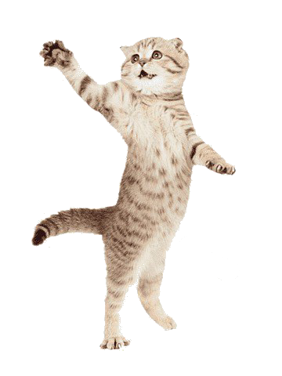

Мы рады приветствовать вас на нашем сайте, посвященном особенным животным, которые нуждаются в вашей помощи.
Здесь вы можете ознакомиться с нашей деятельностью и узнать, как именно ВЫ можете помочь нашим подопечным. Ваши пожертвования помогут нам обеспечить особенных котиков всем необходимым для их комфортной и здоровой
Благодарим вас за вашу поддержку и интерес к нашей работе!
